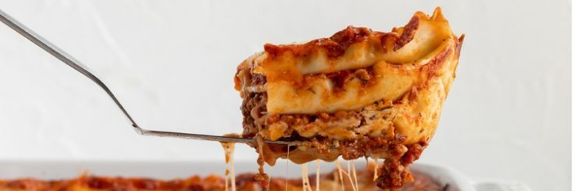

From Kitchens to Community:
Share and Find Trending Recipes
Chickpea and Tomato Soup —
The warm and hearty soup to keep you full throughout the winter season.
Lasagna —
A dish made with layers of pasta sheets, rich meat or vegetable sauce, creamy béchamel or ricotta, and melted cheese, baked to golden perfection.
Beets, Lemon, Heirloom Tomato, and Gluten-Free Bread —
Recipes made from organic and locally harvested ingredients will result in the most amazing meals one has ever consumed.
WHAT WE BELIEVE
We believe in the power of inspiration and collaboration. Recipes are more than just instructions—they're stories, traditions, and creativity shared from one kitchen to another. Our platform is a celebration of the ingredients that bring those recipes to life, like: Apples. Oranges. Lemons. Guavas. Carrots. Cucumbers. Jicamas. Caulifowers. Brussels sprouts. Shallots. Asparagus. Radishes. Broccoli. Scallions. Ginger. Cherries. Cilantro. Parsley. Dill.
WHAT ELSE FUELS OUR CREATIVITY?
Oh! Onions. Yams. Avocados. Lettuce. Arugula (to some, "rocket"). Persian cucumbers, in addition to aforementioned "normal" cucumbers. Artichokes. Zucchinis. Pumpkins. Squash (what some cultures call pumpkins). Sweet potatoes and potato-potatoes. Jackfruit. Monk fruit. Pineapple, Mango. Gooseberries. Blackberries. Tomatoes. Heirloom tomatoes. Beets. Chives. Corn. Endive. Escarole. With these ingredients and countless others, we believe that anyone can create extraordinary dishes by learning from one another. Whether you're perfecting a classic or trying something new, our platform connects you with recipes, ideas, and trending flavors to make the most out of every meal. Let's cook, share, and grow together!